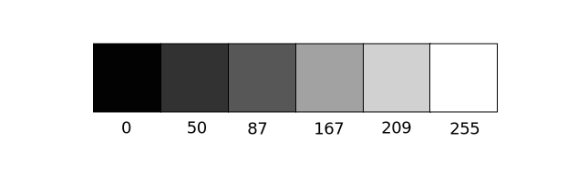

la diversión de Processing x la excentricidad de JavaScript
la simplicidad de Processing x la flexibilidad de JavaScript
la intuición de Processing x el poder de JavaScript
la creatividad de Processing x el dinamismo de JavaScript
la comunidad de Processing x la comunidad de JavaScript
el poder de Processing x el alcance de JavaScript
Color
En el mundo digital hablar de color requiere precisión. No basta con decir, por ejemplo: ¿Puedes hacer un círculo verde azulado?, ya que el color se define como un arreglo de números. Comencemos con el caso más simple: negro, blanco y escala de grises. 0 significa negro, 255 significa blanco. Entre medio, cualquier otro número -50, 87, 162, 209, etc- es un tono gris que va entre negro y blanco.
Al agregar las funciones stroke() y fill() antes de dibujar podemos definir el color de cualquier forma deseada. También existe la función background(), que define el color del lienzo en nuestra pantalla. A continuación hay un ejemplo.
background(255); // Define el color del lienzo como blanco
stroke(0); // Define el contorno de la forma (stroke) como negro
fill(150); // Define el interior de la forma (fill) como gris
rect(50,50,75,100); // Dibuja un rectángulo
Tanto el contorno como el interior de la forma pueden ser eliminados con las funciones: noStroke() y noFill(). Instintivamente podríamos pensar en utilizar "stroke(0)" para eliminar el contorno, sin embargo, es importante recordar que 0 no significa "nada", sino que indica un color negro. Además, recuerda no eliminar ambos, con noStroke() y noFill(), porque ¡nada aparecerá!
Adicionalmente si dibujamos dos figuras, p5.js siempre utilizará la última especificación de contorno y llenado, leyendo el código de arriba a abajo.
Color RGB
¿Alguna vez pintaste con las manos? Al mezclar los colores "primarios" podías generar cualquier otro color. Mezclar todos los colores resultaba en un color café fango, y mientras más pintura añadías más oscuro era el resultado. En el mundo digital los colores también se construyen mezclando los tres colores primarios, pero funciona un poco diferente. Primero, los tres colores primarios son otros: rojo, verde y azul (en inglés red, green and blue, es decir, "RGB"). Luego, con los colores en tu pantalla estás mezclando luz, no pintura, por lo que las reglas de esta mezcla también son otras.

- Rojo + Verde = Amarillo
- Rojo + Azul = Púrpura
- Verde + Azul = Cian (azul-verde)
- Rojo + Verde + Azul = Blanco
- Ausencia de colores = Negro
Lo anterior presupone que los colores son tan brillantes como sea posible, pero por supuesto, hay un rango de color disponible, por lo que un poco de rojo más un poco de verde y azul genera gris, mientras que un poco de rojo más un poco de azul genera púrpura oscuro. Si bien puede tomar tiempo acostumbrarte a esto, mientras más programes y experimentes con color RGB, más rápido se hará instintivo, como mezclar pintura con los dedos. Y por supuesto no puedes decir "Mezcla un poco de de rojo con un poco de azul", debes proveer una cantidad. Así como en la escala de grises, los elementos de color son expresados en rangos desde 0 (ausencia del color) hasta 255 (presencia máxima del color), y son listados en orden R (rojo), G (verde) y B (azul). Obtendrás el resultado de mezclar color RGB por experimentación, pero en adelante cubriremos mediante ejercicios colores más comunes.
Transparencia
Además de los componentes rojo, verde y azul de cada color, existe un cuarto componente opcional denominado "alfa" (alpha, en inglés). Alfa significa transparencia y es particularmente útil cuando deseas dibujar figuras que se superponen y a través de las cuales quieres ver. Los valores de alfa de una imagen son llamados también "canal alfa" de una imagen.
Es importante notar que los pixeles no son literalmente transparentes, esto es simplemente una ilusión lograda al mezclar colores. Tras bambalinas p5.js toma los valores de cada color y les asigna un porcentaje, creando una percepción óptica de la mezcla (Si estás interesado en programar vidrios "color rosa", aquí es donde debes comenzar).
Los valores de alfa también se definen en un rango de 0 a 255, donde 0 es completamente transparente (es decir, 0% de opacidad) y 255 es completamente opaco (es decir, 100% opaco).
Rangos de Color Personalizados
El modo RGB con rangos de 0 a 255 no es la única forma en que podemos manipular color en p5.js, de hecho p5.js nos permite pensar el color de la manera que deseemos. Por ejemplo, tu podrías preferir pensar el color en rangos de 0 a 100 (como un porcentaje). Esto lo puedes hacer especificando un modo específico de color con la función colorMode().
colorMode(RGB,100);
La expresión anterior dice: "Ok, queremos pensar el color en términos de rojo, verde y azul, o RGB, en que el rango de cada color pueda estar entre 0 100."
Aunque rara vez sea conveniente, tu también puedes definir distintos rangos para cada componente de color:
colorMode(RGB,100,500,10,255);
Con la expresión anterior queremos decir: "Rango valores en color rojo va de 0 a 100, verde de 0 a 500, azul de 0 a 10 y alfa de 0 a 255."
Finalmente, si bien es probable que tu código requiera sólamente el modo de color RGB, también puedes especificar colores en el modo HSB (tono, saturación y brillo). Sin entrar mayormente en detalle, el color HSB funciona como sigue:

- Tono o Matiz—El tipo de color, valores por definición van de 0 a 255.
- Saturación—La vivacidad del color, 0 a 255 por definición.
- Brillo—Es el brillo del color, 0 a 255 por definición.
Con colorMode() puedes definir tu propio rango de valores. Algunos prefieren un rango de 0-360 para el tono (piensa en los 360 grados de la rueda de color) y 0-100 para la saturación y brillo (piensa en 0-100%).